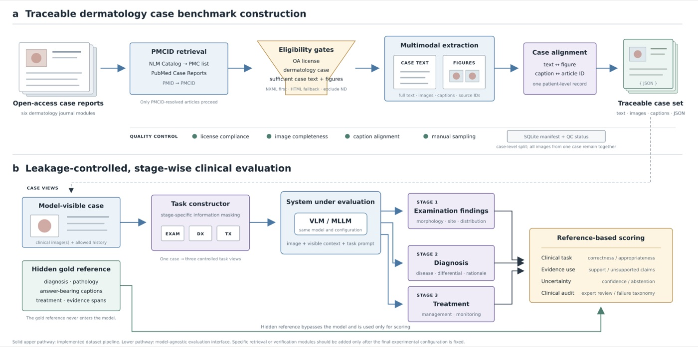
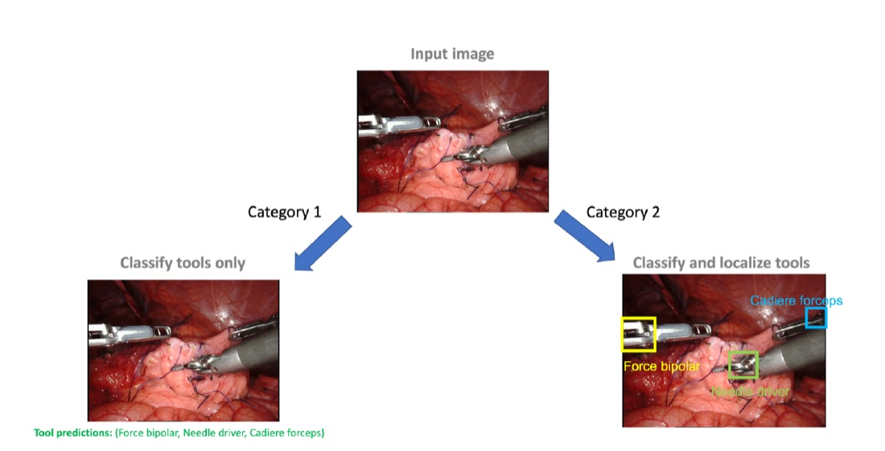
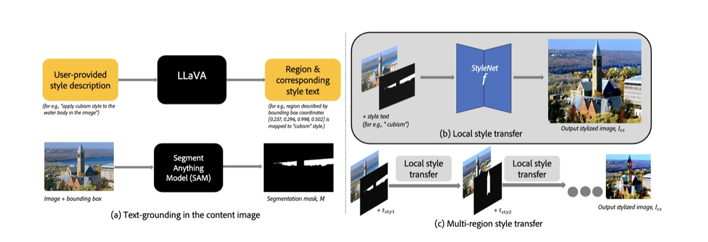
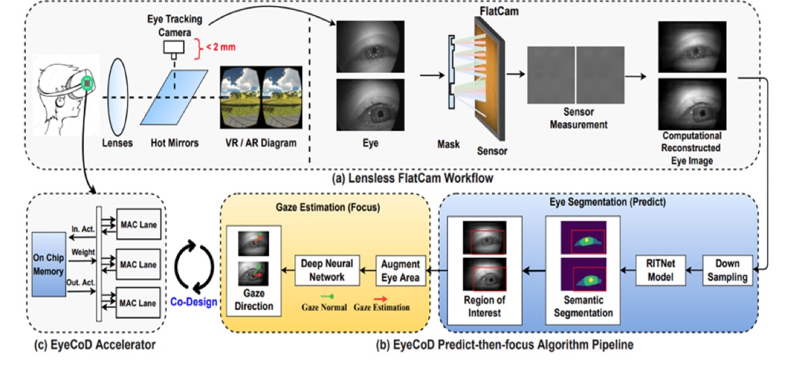
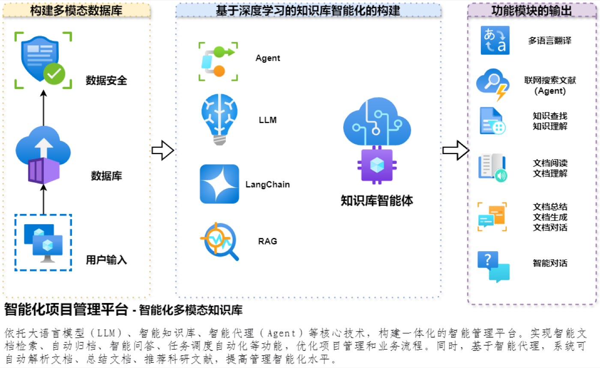
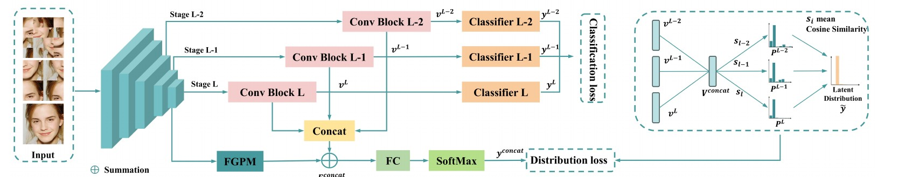
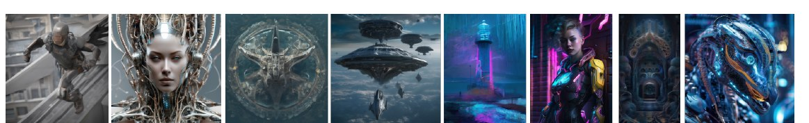

Hi, I'm Lintong Han. I like application-driven research: problems that come from real products and industry, and methods that hold up once they are deployed. My main line of work is generative AI that preserves structure. I use diffusion priors and conditional control to restore and edit images and video under real constraints, such as low-bitrate transmission, while keeping edges, layout, and identity intact.
I am also drawn to the startup side of AI: building reliable multi-agent systems, measuring what actually works in deployment, and turning research into products people use.
I am open to Ph.D. positions, research collaborations, and industry or startup projects. Please feel free to contact me ✦
Research
Edge-Conditioned Generative Restoration of Compressed Video
Can a small side stream of structure help a generative model restore heavily compressed video? The sender transmits a compressed 64×64 video together with a separately coded edge stream extracted from the high-resolution source. At the receiver, a trainable Transformer-ControlNet adapter steers a frozen video diffusion transformer through zero-initialized residuals to restore 512×512 video (8×).
The adapter scale acts as a control knob between pixel fidelity and perceptual quality, and the edge condition improves temporal stability over the unconditioned backbone.
Ground truth · decoded input · no condition · edge condition

Dermatology Image–Text Curation and Evidence-Grounded Evaluation
Traceable dermatology cases built from the literature, with image–caption alignment, provenance, and leakage control. On top of them sits an evaluation protocol that tests whether a vision-language model's answer depends on the image it was given.
A contract-driven multi-agent system that plans, drafts, gates, adapts, and publishes content, then measures whether AI answer engines mention it. Typed handoffs and versioned contracts ensure a failed run never overwrites a validated output.
China editionWeChat, Xiaohongshu, Douyin, Zhihu, Baijiahao and more · measured on Doubao
Global editionX, Facebook, Instagram, Reddit, Discord via official APIs · measured on Gemini
With Mengran Wang. 23 agent roles, 1,946 automated tests.
AI AgentsLLMChina & GlobalStartup

Surgical Tool Classification & Localization
Weakly supervised 3D U-Net and ResNet pipelines that classify and localize tools in sparsely annotated endoscopic video, where labels list the tools in a clip but not where they are.
Medical ImagingWeak SupervisionVideo

“Golden Era” Generative Video
A multi-agent text-to-video system for shot composition, camera motion, and cross-shot character consistency. I implemented visual-style prompting and Swapping Self-Attention for local feature transfer, and helped build a human-rated quality dataset.
Generative VideoAI AgentsMultimodal

EyeCoD: Gaze-Driven Segmentation
Compact vision models for on-device eye tracking. I chose MobileSAM for its accuracy–size trade-off and designed dynamic activation gating for Neural Prompt Search adapters, which stabilizes mask updates and cuts latency.
On-device VisionSegmentation

Enterprise Scientific Assistant
A privately deployed LLM/RAG platform for semantic search and document automation over long institutional documents. It includes a QA set for prompt and LoRA experiments and a user-feedback loop after deployment.
LLM & RAGDeployment
Manuscripts
† denotes the corresponding author
StyleCoD: Training-Free, Region-Decoupled Style Re-rendering of Portraits with Face-Priority Identity Preservation
Lintong Han, Yushen Wei, Lifang Zhou†
First authorControllable GenerationSDXLIdentity Preservation
Identity, layout, and semantic change are assigned to different regions and stages. On a 120-image public benchmark, ArcFace identity rises from 0.06 (img2img) to 0.53 while the scene layout is kept.
Photos: Open Images, CC BY 2.0 (D. Eltjes; Canadian Film Centre)
Label Distribution Learning for Facial Expression Recognition Based on Multi-Granularity Perception
Lifang Zhou†, Pengjun Xiang, Haoyu Wang, Weisheng Li, Lintong Han, Jun Hu
Affective ComputingLabel Distribution LearningFrequency Features
Progressive multi-granularity training and a frequency-aware global perception module build emotion distributions that handle ambiguous expressions. Evaluated on RAF-DB, FERPlus, AffectNet, and Aff-Wild2.

A Multi-Branch Style Assessment for Science Fiction Image Generation
Lintong Han and collaborators
Image Quality AssessmentAIGCDataset
Sci-Fi-4K: 4,000 generated images in four sci-fi styles, and a regression framework that fuses textual and visual features into a Sci-Fi Score aligned with human judgments.

Generative Engine Optimization Beyond the Document: A Deployment Report on a Multi-Agent Content and Publishing System
Lintong Han, Mengran Wang
First authorAI AgentsGEODeployment Study
An eight-stage loop from measurement to verification, run for 19 days: 164 pieces on 10 channels for about US$7 in model calls.